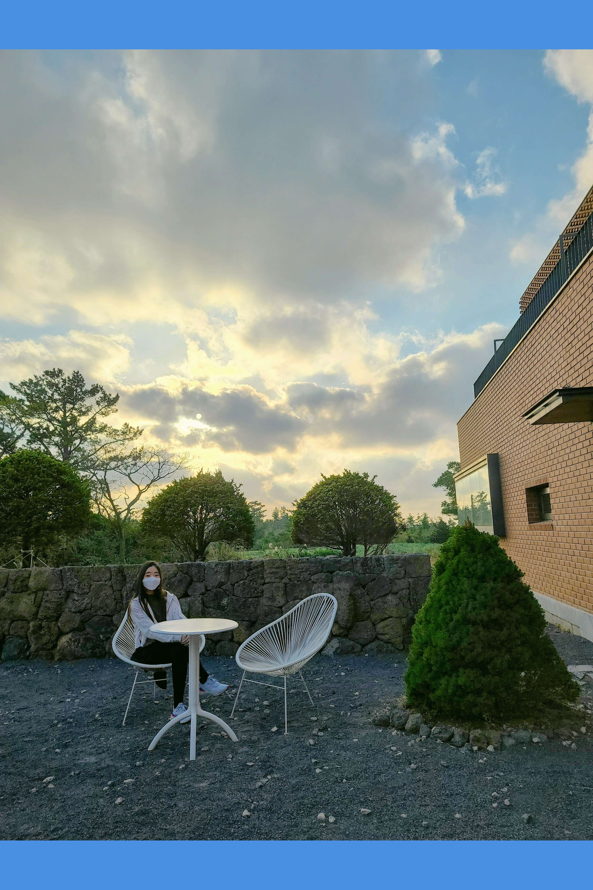

Random Poems

These are two poems that came to mind this past month, while I was daydreaming as I looked out the window.
The second poem is done in a similar fashion to The Yellow Wallpaper, a Short story by Charlotte Perkins Gilman.
Broken Printer:
Clack, brrrrr, beep beep beep,
Plop, you throw up onto the floor.
Your eyes all red, full of tears, glimmering,
Against ashen skin, covered in white sediment.
Stained red tie, you glare at me,
At the unknown future, at the past, at today.
Huffing and puffing you mutter a name repeatedly,
Hoping, wondering, thinking I care,
As if this is all something new.
You say the same “errors” everyday,
Knowing full well I can’t fix them.
You rant to me, your captive audience, knowing I can’t leave.
Endlessly you ask me for more, more black coffee, more company,
occasionally the rainbow milkshake, some laughs.
It doesn’t matter if it’s the 16th cup or my smile doesn’t reach my eyes,
You wouldn’t know.
Silence, sudden silence, you look uncertain,
Coughing, mouthing something, eyes closing,
Falling asleep against the cool marble top,
The lights fizz out, it’s time for me to go.
I clean the mess, picking up the papers,
Your thoughts, what I needed, cut up in broken sentences,
An enigma.
Random dates scrawled everywhere, ink illegibly faded,
the most important parts,
The truth, your apologies.
What a pity, the printer irreplaceable,
I tap the button again.
Free:
It taunts me, the movie, against the muddied screen.
The temptation unbearable, but appeased by the black towel;
Stubborn film refusing to stay hidden, it shouts in fury, pulling what I love the most:
The song of the birds, the blue ones.
The film sometimes fights the black thing, roaring at it,
Losing every time with its tears dropping onto the grey floor, in light whites and yellows.
It cries everyday, dying slowly, only to be reborn again the next, always losing,
a meaningless cycle.
I don’t know who it fights for, it certainly can’t be me, the film’s never quite liked me.
The days go by ever so slowly, but sometimes too fast, for I cannot leave.
I count the days in fear, hunger, or sometimes even bliss,
Whatever they make me feel.
I don’t know, I don’t know if I long for the film,
I return everyday to it, crouching, sighing, eyes lit up in curiosity.
Some days I want to tear the towel apart and dirty my hands, but I am no fool.
The film will only tear at me, once free from its cage, assailing me left and right,
Till I’m an empty shell, dazed and a squinting mess,
For months at a time, devouring my health ravenously,
Until a new movie arrives, throwing Spring away